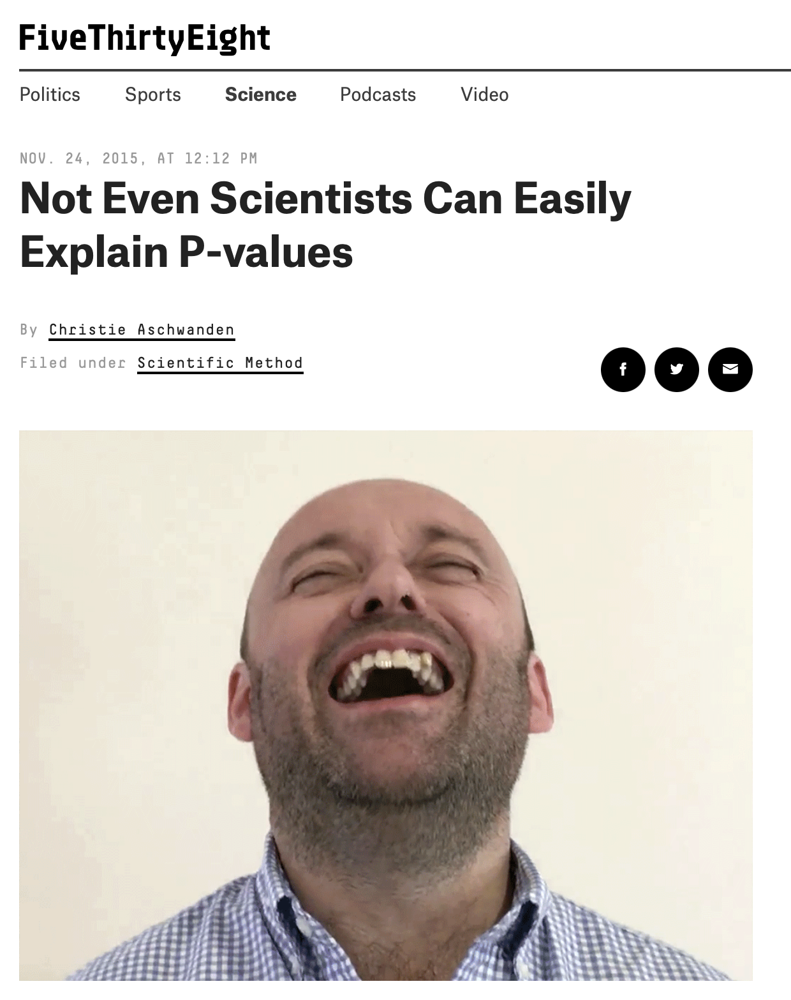

\(p\)-values and “statistical significance”
Week 8 Lecture 2

Imagine a skeptic named Sarah
- Scientists are often arguing that something is true
- To do this, we have to persuade skeptics
- Skeptics start out believing we are wrong. This is the null hypothesis.
Is the coin fair?
- When you get together, you and Sarah flip Sarah’s favorite quarter to decide who gets to pick the restaurant
- The last three times, the quarter has come up heads, meaning Sarah gets to pick
- You start getting suspicious — does this coin come up heads more often than tails?
- Sarah is skeptical: of course the coin flips heads and tails equally often.
Is the coin fair?
- Null hypothesis: the coin is equally likely to come up heads or tails
- (what Sarah the skeptic thinks and you want to show is wrong)
- Alternative hypothesis: the coin is more likely to come up heads than tails
- (what you want to show is true)
- How would you go about proving Sarah wrong?
How things would look if the coin is fair
How would Sarah respond?
“Even if I were right (so the null hypothesis is true) and you were wrong, how often would we see this result by chance? We don’t expect a fair coin to land heads exactly 5 out of 10 times it is flipped.”
Sarah also knows how to use R
She simulates 10,000 different tries of flipping a coin 10 times
What percent of tries had 7 or more heads?
- About 17% of times you flip a fair coin 10 times, you’d expect to see 7 or more heads
- So Sarah has a pretty good point!
- This is a \(p\)-value: the probability that we would see an answer as or more extreme than the answer we saw if the null hypothesis was true.
What this means visually
We need two things to calculate a p-value:
- The estimate that we actually saw (the coin came up heads 7 times)
- An understanding of what might have occurred by chance if the null hypothesis were true (the simulation of likely outcomes)
The point of \(p\)-values
- \(p\)-values might seem like just a way for skeptics like Sarah to show that the evidence is ambiguous and there’s a chance the null hypothesis is right
- But in science, we often argue that the null hypothesis should be rejected — that Sarah should accept that she is wrong
- Say you saw 9 flips out of 10 come up heads:
What you might tell Sarah
“It’s really unlikely that we would have seen 9/10 heads by chance if the null hypothesis were right. So as a result, we should reject the null hypothesis.”
- This is how scientists use \(p\)-values — to argue that the evidence they saw is unlikely to have occurred by chance!
- The lower the \(p\)-value, the less likely we would have seen this evidence by chance if the null hypothesis were true.
But when is a \(p\)-value low enough?
Statistical significance
- Social scientists have arbitrarily decided to consider estimates with \(p\)-values below 0.05 statistically significant
- i.e., there is a 1 in 20 chance that an estimate could occur purely by chance
- Other disciplines set different thresholds — in physics, the threshold is 1 in 3.5 million!
So if \(p\) = 0.1, is our hypothesis wrong?
- Not necessarily — there’s still just a 10% chance we would observe what we did under the null hypothesis
- A study with a non-significant p-value is simply inconclusive
- An estimate is still a good best guess, even if the evidence isn’t as strong as we might wish
Why not just calculate the probability we are right?
- Remember, we just calculated the probability we would see what we saw if Sarah were right.
- Why not just calculate the probability we are right?
- This turns out to be impossible!

This sets up an awkward situation
- One person can say “my \(p\)-value is 0.027!”
- i.e., if the sun DIDN’T explode, the machine would only say it had 2.7% of the time!
- But someone else can sometimes reasonably say, “that still seems possible.”
- What’s more likely: the machine lying or the sun actually exploding?
- When evaluating statistical significance, think about the threshold it would take to convince you!
Things \(p\)-values do NOT mean
- A \(p\)-value is NOT the probability that the hypothesis you want to prove right (the alternative hypothesis) is true.
- A \(p\)-value is NOT the probability that the null hypothesis is true.
- A statistically significant \(p\)-value does NOT mean the null hypothesis is false.
- A non-statistically significant \(p\)-value does NOT mean the null hypothesis is true.
What \(p\)-values actually mean
- A \(p\)-value is the probability of seeing an estimate as large or larger than the estimate we saw if the null hypothesis were true.
- If you prefer: if we repeated a study many times, what percent of the time would we get an estimate as extreme as we did if the null hypothesis were true?
- e.g., 20 groups in a large class study whether eating jelly beans causes acne (it doesn’t, thank goodness)
- We should expect 1/20 groups to get a p-value less than 0.05 by chance!
Reviewing new concepts
- Null hypothesis: the hypothesis you want to disprove. (In experiments, this is usually that the treatment has no effect.)
- Alternative hypothesis: the hypothesis you want to demonstrate. (In experiments, this is usually that the treatment does have an effect.)
- \(p\)-value: The probability we would see an estimate as large or larger than the one we did, if the null hypothesis were true.
- Helps answer a skeptic of a treatment by telling them how likely it is that we would see the evidence we did if the null hypothesis were true.
- Corresponds to a t-statistic of 1.96
One last new concept
- Statistical significance: a \(p\)-value less than 0.05. This is an arbitrary threshold used by social scientists.
- A statistically significant \(p\)-value:
- means that, by convention, we say the null hypothesis can be rejected.
- does NOT mean the null hypothesis is definitely wrong.
- A non-statistically significant \(p\)-value:
- means that, by convention, we cannot reject the null hypothesis.
- does NOT mean that the null hypothesis is definitely true.
- A statistically significant \(p\)-value: